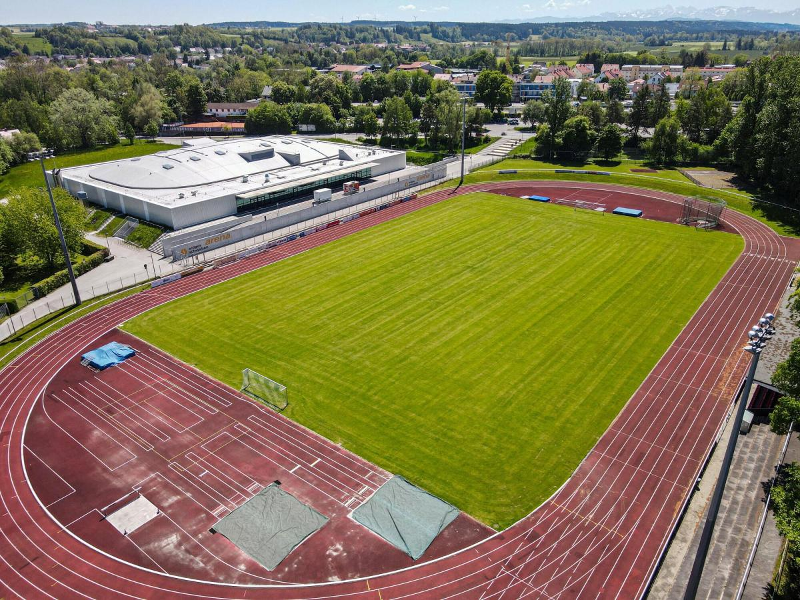

Noch nicht veröffentlicht
Gegner, Datum, Uhrzeit und Spielort erscheinen hier automatisch.

Der Live-Bereich ist vollständig vorbereitet und wird nach der offiziellen BFV-Freigabe automatisch mit aktuellen Daten versorgt.
Gegner, Datum, Uhrzeit und Spielort erscheinen hier automatisch.
Das letzte Pflichtspielergebnis wird nach der Anbindung automatisch aktualisiert.
Die aktuelle Platzierung wird direkt aus den offiziellen Daten übernommen.
Nach Eintragen des nächsten Termins startet der Countdown automatisch.
Die Funktion ist bereits eingebaut und muss später nur mit Datum und Uhrzeit gefüllt werden.